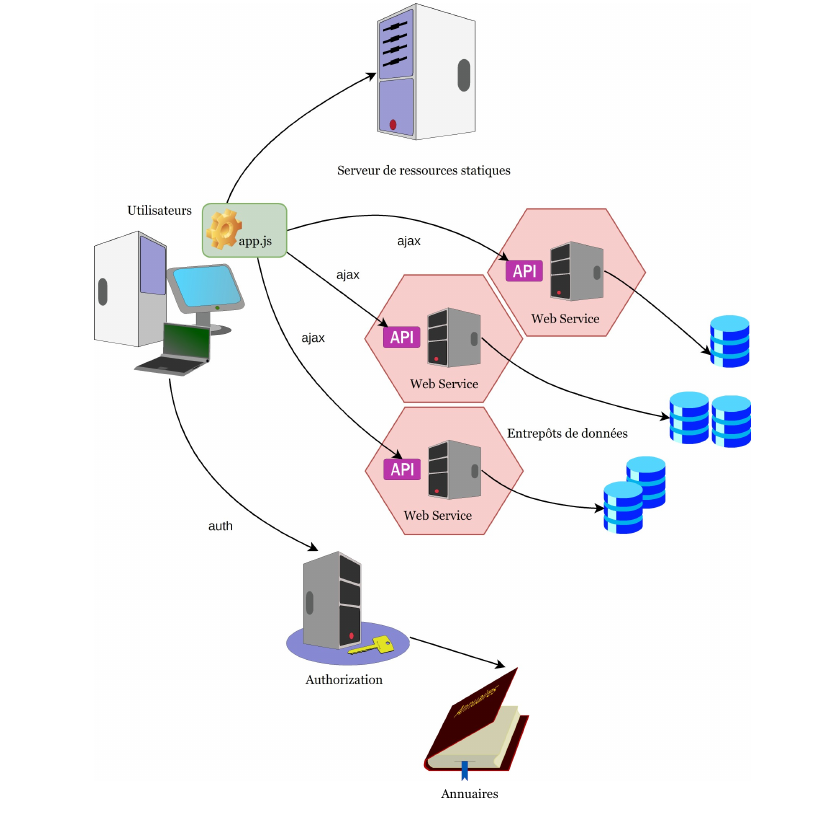
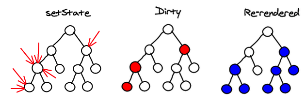
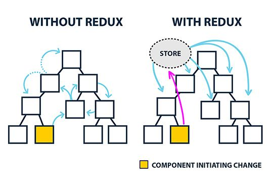

Formation React

// maFonction prend un objet en entrée
// de cet objet elle ne garde que la propriété nommée a
const maFonction = ({a}) => {
console.log(a)
}
const monObjet = { a: 1,
b: "valeur1"
}
// affiche 1
maFonction(monObjet)
const monObjet = {a: 1, b: 2};
// mise à plat de monObjet et l'affecter à l'objet2 (clonage de monObjet)
const objet2 = {...monObjet};
const monTableau = [1, 2, 3];
// a vaut 1, b vaut 2
const [a, b] = monTableau;
// clonage d'un tableau
const tableau2 = [...monTableau];
// les arguments restants d'une fonction
const MaFonction = (arg1, ...args) => console.log(args);
// afficher le tableau [2, 'toto']
MaFonction(1, 2, 'toto');

Utilisation d'un composant
Supposons qu'on a défini un composant MonComposant dans un fichier MonComposant.js## Props * objet transmis à un composant * lecture seule
## State * état local du composant * initialisé avec **useState** : const [monEtat, setMonEtat] = useState('Valeur initiale') * il faut importer cette fonction de React ```javascript import { useState } from "react"; ``` * la mise à jour doit être faite avec le setMonEtat fourni par useState :
// Affecter une nouvelle valeur :
setMonEtat('Nouvelle valeur')
// Modifier l'ancienne valeur
setMonEtat(etat => etat + " modifiée")
Exemple useState avec une input
Suggestions champ select
Exercice 5 - Formulaire et compteur : flux entre composants
- Ajouter une variable de compteur qui s'incrémente à chaque fois qu'on clique sur le bouton d'enregistrement du formulaire
- Afficher ce comptage dans le Formulaire et dans le Header
Indices (cliquer pour afficher)
- déclarer la variable compteur dans App
- modifier le composant Header pour lui passer une props compteur
Correction
git checkout exercice5-form-cpt
const headers = new Headers();
headers.append("Content-Type" , "application/json")
fetch("https://formation-react-api.dev.kube.insee.fr/applications",
{
method: 'POST',
headers: headers,
body: JSON.stringify({nom: nom, version: version, etat: etat})
})
.then(reponse => console.log(reponse))
.catch(e => console.log(e))
Utliser ce code dans la méthode "enregistrer" du formulaire
##### Correction
```git
git checkout exercice7-ws-post
```
Exemple : Un composant Tableau listant les applications
React Router
* bibliothèque de routage : associe les url aux composants * https://reactrouter.com/docs/en/v6 * gros changement dans la version 6 par rapport à la version 5 * installation :
npm install react-router-dom@6 history@5
## Composants * Router : point d'entrée à wrapper autour de App. On choisit HashRouter pour ne pas avoir à configurer le serveur de prod. * Dans index.js :
## Composants : Routes et Route * le composant Routes a des enfants Route * Route associe une url à un composant * le client demande une url => Routes cherche dans ses enfants un Route qui matche et renvoie le composant associé
Les hooks de React Router: * useNavigate : naviguer vers une URL * useParams : utiliser une portion de l'URL commme variable et accéder à cette variable
Composant : Link
Redux
## Besoins * accès/modification des données par un composant quelque soit sa position dans l'arborescence * "mise en cache" des données d'une page

### Ajout du store dans l'application
3. Dans index.js ajouter le composant Provider et sa prop store
### Utilisation des actions dans un composant _Counter_
Dans un fichier Counter.js créer le composant Counter et créer une route **"compteur"** qui affiche le composant
Mise en place
npm install redux react-redux @reduxjs/toolkit
## Exemple On souhaite mettre dans le store le nombre de fois qu'on a cliqué sur "Enregistrer" dans un formulaire. Ce compteur sera réaffiché dans le composant Tableau. 1. créer l'action dans un fichier nommé actions.js
export const MODIFIER_COMPTEUR = "MODIFIER_COMPTEUR"
export const modifierCompteur = payload => ({type : MODIFIER_COMPTEUR, payload })
2. créer le reducer dans un fichier nommé reducer.js
export const applicationReducer = (state = 0, action) => {
if(action.type === MODIFIER_COMPTEUR) {
return state + action.payload
}
return state;
}
3. connecter le reducer au store Dans index.js
4. permettre au composant Formulaire de modifier le store(mapDispatchToProps) Créer un fichier FormulaireContainer.js
import { connect } from 'react-redux'
import { modifierCompteur } from "./action"
import Formulaire from './Formulaire'
const mapDispatchToProps = dispatch => ({
ajouter : valeur => dispatch(modifierCompteur(valeur))
})
export default connect(null, mapDispatchToProps)(Formulaire)
5. Modifier Formulaire pour pouvoir appeler la fonction injectée. Dans Formulaire
// On utilise la fonction injectée :
const Formulaire = ({ajouter}) => { ....
// Dans la méthode qui enregistre :
ajouter(1)
6. Afficher le state dans le composant Tableau (mapStateToProps)
Créer un TableauContainer.jsOn souhaite donner une structure d'objet au state 1. Modifier le fichier reducer.js
## Exercice * installer le plugin Redux DevTools pour visualiser le store : * le plugin Firefox : Redux DevTools * dans index.js :
* mettre dans le store le nom de la dernière application que vous avez enregistrée * réafficher ce nom dans un composant de votre choix
Material UI
* suit les principes Material Design * https://mui.com/ * la dernière version v5 est sortie en septembre 2021 * Doc : https://mui.com/getting-started/usage/
MUI-Datatables
Formik
## Validation du formulaire 2 manières de faire [(voir la doc)](https://formik.org/docs/guides/validation): * déclarer un fonction validate qui va faire le travail de validation * déclarer un schema de validation avec la librairie [yup](https://github.com/jquense/yup) : `npm install yup` Pour les deux méthodes, le résultat est le même : * l'objet formik qu'on a injecté dans le formulaire va contenir un objet **errors**